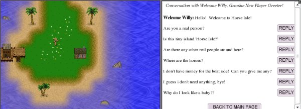

Once you have entered the world of Horse Isle, you will be set down on Welcome Isle.
The first thing you'll notice is that your icon is of a baby in diapers! You will be able to change this to any of a number of different icons; this will be explained later.
The first thing to do on Welcome Isle is to go see Welcome Willy, who lives in the cabin on the east side of the island. He will be able to tell you a number of important things about Horse Isle. Make sure you take advantage of his willingness to talk; once you leave Welcome Isle, you will not be able to return.
Welcome Willy will teach you a little about questing, too. He will not give you the money you need to take the boat to Horse Isle, but he will tell you where a treasure can be dug up. Read carefully what he tells you. He will be pretty specific about where to dig.
NOTE: Yes, you do have a shovel! In fact, you have an entire tool-kit! Click on the wrench/spanners on the lower right of the screen. You have a binoculars, a rake, a shovel, and a magnifying glass. Because you will use these a great deal during the game, become familiar with how they work now. When you use your shovel to dig in the spot indicated by Willy, you will find a small sum of money, enough to get you started on Horse Isle.
To change the way your user icon looks, click the PROFILE button on the button panel in the center of the screen. There you will be able to say things about yourself and choose how you look. Please remember that giving out personal information of any kind (that is, names, dates, ages, etc) is strictly forbidden, so keep your profile information limited to things that are relevant to your experiences here on Horse Isle.